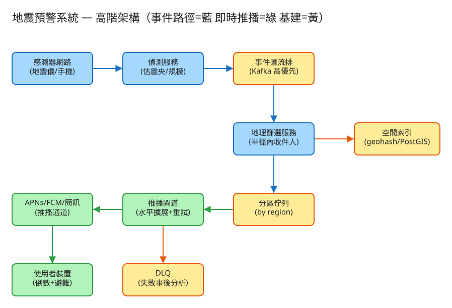

A 通知/Fan-out 看故事就懂 輕鬆讀 25 分鐘
想像你是一個 5000 萬人 LINE 群組的管理員。突然偵測到「地震來了！」，你必須在幾秒鐘內， 只通知住在危險區域的人，叫他們「快躲！還有 15 秒」。
地震預警系統就是在做這件事。它的難，難在三點：群組有幾千萬人、只能通知對的人、而且你在跟地震波賽跑。
很多人第一個疑問是：「地震都發生了，怎麼可能『預先』警告？」關鍵在一個你早就懂的生活經驗——
震央附近的地震儀會先偵測到溫和的 P 波，馬上判斷「地震了！」，然後用光速的網路訊息 通知遠方的城市——趕在那個會搖垮房子的 S 波（雷聲）走到你家之前。
所以預警的本質是：用「光速的訊息」超車「地震波」。系統要做的，就是把「偵測＋通知」的總時間，壓到比地震波傳過來還短。
💭 停一下：為什麼住得離震央越遠的人，反而有越多逃命時間？
別被「系統」嚇到。整件事其實就是闖 3 關，一關一關來：
有人要先喊出「地震來了」。這通常由官方測震網（像中央氣象署、美國 USGS）負責——它們有滿地的地震儀， 幾秒內就能估出震央在哪、規模多大。
👉 面試時先問一句：「偵測是我們做，還是別人給我們事件？」答案會大大改變題目範圍。多數情況我們只負責後面兩關。
地震只影響震央附近一圈人。問題是：怎麼從 5000 萬人裡，幾毫秒內挑出「住在這圈裡」的人？
系統用的工具叫 geohash：把地球切成一格一格的小網格，每格一個短代碼，位置相近的代碼開頭一樣。 於是篩選變兩步：
⚠️ 小細節：人可能住在格子的邊緣，所以要連旁邊 8 格一起撈，免得漏掉邊界上的鄰居。寧可多撈，不可漏人。
名單有了，現在要同時把警報送到幾百萬支手機。一台機器一個一個送，送到天亮地震都結束了。
這個「一個事件 → 炸開成幾百萬則通知」的動作，就叫 fan-out（扇出）。 而且地震一發生就要主動推給大家（你不會自己打開 App 去「拉」地震消息），所以是「事件一來就立刻展開」。
工程上的「取捨」聽起來很抽象。換個方式記：這個系統最怕三件事，每個設計都是為了避開某個「怕」。

✏️ 用 Excalidraw 開啟編輯（diagram.excalidraw）白話導讀，由左到右一路看：
看完上面，這些詞你其實都已經懂了，這裡只是把「工程術語 ↔ 白話」對起來，Part 2 會用到：
| 工程術語 | 白話解釋 |
|---|---|
| P 波 / S 波 | 地震的「閃電（快）」與「雷聲（慢、會破壞）」 |
| geohash | 位置的「郵遞區號」：把地圖切成網格，每格一個代碼 |
| fan-out（扇出） | 一個事件 → 同時通知超多人 |
| haversine | 算地球上兩點實際距離的公式（細篩用） |
| at-least-once | 「至少送一次」：寧可重送也不漏送 |
| 冪等 / 去重 | 同一個警報只算一次，不會重複響 |
| 佇列 (Queue) | 排隊的待辦清單，工人從前面一個個拿來做 |
| QPS | 每秒幾筆請求（衡量「多忙」的單位） |
| API | 系統之間講好的「點餐單」格式：你給我什麼、我回你什麼 |
| DLQ（死信佇列） | 「怎麼送都送不到」的訊息丟進的回收桶，事後檢討用 |
| 優先級 / 背壓 | 地震訊息插隊到最前面，普通通知讓路 |
| 水平擴展 | 不夠快就「多找幾台機器一起做」 |
我們估幾個關鍵數字（數字不必背，重點是感受它的「形狀」）：
| 估什麼 | 大概數字 | 所以呢？ |
|---|---|---|
| 要照顧多少裝置 | 全國 ~5000 萬支手機 | 篩選不能慢慢一個個查 |
| 一次地震影響多少人 | 都會區可達 500 萬～1000 萬 | 要能「同時」通知這麼多人 |
| 有多少時間 | 離震央 70 公里 ≈ 只有 20 秒，扣掉偵測剩 ~10 秒 | 全部動作要在 10 秒內做完 |
| 要多快的推播速度 | 1000 萬人 ÷ 10 秒 = 每秒 100 萬則 | 一台機器不可能，要一大群一起送 |
💭 停一下：如果平時流量幾乎是 0，為什麼不能「地震發生才開機器」？
這題只要記住三張「點餐單」：
① 偵測服務通報地震（最重要）
POST /quake-events
給我：{ 震央經緯度, 規模, 影響半徑, 偵測時間 }
我回：202「收到了！」← 立刻回，不讓你等為什麼「立刻回 202」？因為通報的人不該卡在那邊等我們慢慢通知幾百萬人。先收下，後面非同步慢慢展開。就像餐廳收單後給你號碼牌，不會讓你站在櫃台等餐。
② 修正 / 取消（用同一個地震編號）
PATCH /quake-events/{編號} → 規模改了、降級
DELETE /quake-events/{編號} → 誤報，發取消通知用「同一個編號」很關鍵：這樣修正就是蓋掉原本那筆，而不是變成第二次地震（這就是「冪等」——同個編號做幾次結果都一樣）。
③ 使用者註冊裝置 + 位置（平常就做好）
POST /devices
給我：{ 推播 token, 經緯度, 想用哪些管道(push/簡訊) }送到手機的內容長這樣：{ 強度:"5強", 還有幾秒:18, 該做什麼:"就地掩護" }。
每支手機一列：裝置ID、推播token、經緯度、geohash、想用的管道。
每次地震一列：地震編號（主鍵）、震央、規模、影響半徑、狀態(新/修正/取消)。
用「地震編號」當主鍵，修正/取消才能精準蓋掉同一筆。
記「哪次地震、送給哪支手機、送到了沒、重試幾次」。
用 (地震編號 + 裝置ID) 當鑰匙——同一組只算一次，就能做到「重送也不會讓你手機響兩下」。
| 哪裡會塞車 | 怎麼拓寬 |
|---|---|
| 篩選：5000 萬人一個個算距離 | 用網格索引（郵遞區號法）先粗篩再細篩 |
| 地震消息被一堆普通通知卡在後面排隊 | 給地震一條專屬 VIP 通道，永遠插隊最前面 |
| 一台推播工人送不完千萬則 | 把名單切片，多請一大群工人同時送（水平擴展） |
| 蘋果/Google 的推播服務對你限速 | 用多個帳號/多管道分流 + 批次送 |
| 平時 0 流量，地震要瞬間爆量 | 平時留小火種待命，能秒級放大（別從零開機） |
| 地震可能直接震垮你的機房 | 機器放好幾個不同地點，一個垮了還有別的 |
「Part 1 的三個怕」是核心取捨。這裡補幾個常被面試官追問的：
讀十遍不如玩一遍。這題有一個真的可以跑的小程式，讓你親眼看到「篩選 + 通知」：
# 啟動（在這題的 demo 資料夾裡）
cd demo
php -S localhost:8002 -t public
# 然後瀏覽器打開 http://localhost:8002玩過 demo 了，來掀開引擎蓋看看「那幾關到底是哪幾段程式做的」。 好消息：核心就那四個小檔，剛好對應前面講的工作。不用會 PHP，我把程式翻成白話、只留關鍵那幾行，看註解就懂。
對應關卡 2的「先看郵遞區號框出同區，再細看」。程式分兩步：粗篩（算出震央那格的代碼）＋細篩（精算每個人離震央幾公里）。
function 找出範圍內的人(全部裝置, 震央, 半徑) {
// ── 粗篩：算出震央那一格的「郵遞區號」前綴 ──
前綴集 = 算geohash(震央) 連同周圍 8 格 // ← 邊界的人也要撈，寧可多撈不漏人
// 真實系統拿這串前綴去空間索引秒撈候選；demo 資料少，直接做細篩
// ── 細篩：對候選逐一算「真正的距離」 ──
命中 = []
for (每個 裝置 in 全部裝置) {
距離 = haversine(震央, 裝置座標) // 地球兩點實際距離公式
if (距離 <= 半徑)
命中.加入(裝置 + { 距離 }) // 在圈內才留下
}
回傳 依距離排序(命中) // 近的先通知
}這正是「郵遞區號先框、再精算距離」那兩步。haversine 就是名詞表裡那條「算地球兩點實際距離」的公式。注意粗篩一定要連周圍 8 格一起撈，否則住在格子邊緣的鄰居會被漏掉——寧可多撈，不可漏人。
💭 停一下：既然細篩一定會精算距離，為什麼還要先做「粗篩」這一步？
對應關卡 3「老師通知全班，分組長分頭傳」。篩出名單後，要把「一個地震事件」展開成「一人一張派工單」排進佇列，工人才能分頭領。
function 展開(地震, 收件人名單) {
for (每個 收件人 in 收件人名單) {
抵達秒數 = 收件人.距離 ÷ 3.5 // S波每秒約3.5km，算「還有幾秒」
派工單佇列.加入({
冪等鍵: 地震.編號 + "|" + 收件人.裝置ID, // ← 之後去重就靠這把鑰匙
裝置ID: 收件人.裝置ID,
內容: { 規模, 還有幾秒:抵達秒數, 該做什麼:"就地掩護，遠離窗戶" }
})
}
}一個地震 → 名單上每個人各生一張派工單，這就是 fan-out（扇出）：一件事炸開成幾百萬則通知。注意每張派工單都帶一把冪等鍵＝地震編號|裝置ID，下一步去重就靠它。順手把「離震央幾公里」換算成「還有幾秒」塞進通知，這樣使用者收到的是「還有 18 秒」而不是冷冰冰的距離。
對應怕「漏掉人」的解法：原則是寧可重送也不漏送（at-least-once），但重送不能讓你手機響兩下。所以工人送之前先翻記帳本：
function 投遞(派工單) {
// ── 冪等去重：這把鑰匙(地震|裝置)已經成功送過？跳過！──
if (記帳本.已送達(地震編號, 裝置ID))
return 跳過; // ← 同一警報只響一次，重送被擋在這
結果 = 真的送出去(派工單) // 真實系統這裡換成呼叫 APNs/FCM
if (結果成功)
記帳本.記下("已送達", 地震編號, 裝置ID) // 寫進帳本，下次重送就會被擋
}這就是名詞表裡的冪等：上游為了不漏人「至少送一次」（可能重送），投遞層一翻帳本「這把鑰匙已經是已送達」就直接跳過。把「至少一次」修成「剛好一次的體驗」——重送也不會讓你手機響兩下。
推播商偶爾會暫時送不到（網路抖動）。不能一失敗就放棄（漏人），也不能瘋狂猛重試（把對方打爆）。做法是每次失敗就等久一點再試：
嘗試 = 0
while (嘗試 < 3) { // 最多試 3 次
嘗試++
if (送出成功) { 標記成功; break }
// ── 指數退避 + 抖動：等待時間一次比一次長 ──
等待 = 50毫秒 × 2^(嘗試-1) // 50 → 100 → 200…一次比一次久
等待 += random(0, 50) // 加一點隨機「抖動」，避免大家同時重試
等一下(等待)
}
if (還是失敗) 丟進DLQ回收桶 // ← 試完還不行：地震時效太短，補送無意義，留著事後檢討每次失敗等待時間翻倍（50→100→200 毫秒）叫指數退避；再加一點隨機抖動，是怕幾百萬個工人「同時失敗、同時重試」又把推播商打爆。試到上限還不行，就丟進 DLQ（回收桶）——地震警報過了幾秒就沒意義，補送沒用，留著事後檢討為什麼送不到。
| 關卡 / 怕的事（前面講的） | 哪個檔 | 關鍵那段 |
|---|---|---|
| ② 挑出附近的人（地理篩選） | GeoIndex | 粗篩前綴 + haversine 細篩 |
| ③ 同時通知超多人（fan-out） | NotificationQueue | 展開() 那個迴圈 |
| 怕漏人 → 不重響（冪等） | Dispatcher + Store | 送前查記帳本「已送達？」 |
| 怕慢/暫時失敗（重試） | Dispatcher | 指數退避 while 迴圈 + DLQ |
👉 重點：真實系統會把這裡的「JSON 檔 + for 迴圈」換成更猛的工具—— geohash 粗篩換成 PostGIS / Redis GEO 的空間索引（一次秒撈附近的人）、記憶體佇列換成 Kafka（多 worker 依地區分頭並行消費）。 但上面這幾段判斷邏輯——粗篩再細篩、一個事件炸成多張派工單、送前查帳本去重、失敗就退避重試——一字都不用改。所以讀懂這個小 demo，你就讀懂了這題的核心。
先不要看答案，自己用講給朋友聽的方式回答看看（講得出來才是真的懂）：
地震預警 = 跟地震賽跑的精準群組廣播。
3 個關卡：① 偵測地震 → ② 用網格（geohash）挑出附近的人 → ③ 一群工人同時推播（fan-out）。
3 個怕：怕慢（速度壓倒一切）、怕漏（寧可重送＋去重）、怕吵錯人（誤報疲勞會害死人）。
工程細節一句話：先估「演唱會散場」般的爆量 → 用「點餐單(API)」溝通、收到地震先回 202 → 三本筆記本（裝置/地震/投遞）＋預存 geohash → 找出塞車環節各自拓寬。
想看更精簡、面試速查用的版本？👉 前往完整版（同樣內容的工程速查格式）。